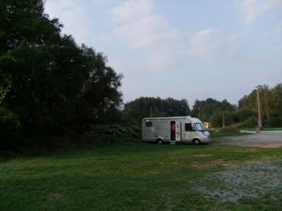

APN = Parking toléré jour/nuit de :
SERMAMAGNY
(N° 226)
Accès/adresse :
Rue d'Evette
Base de loisirs du lac de Malsaucy
90350 SERMAMAGNY
Base de loisirs du lac de Malsaucy
90350 SERMAMAGNY
Latitude : (Nord) 47.68338° Décimaux ou 47° 41′ 0′′
Longitude : (Est) 6.81424° Décimaux ou 6° 48′ 51′′
Tarif : Gratuit
Services :
Autres informations :

Le 25/10/2012 par jclb89
de
jclb89
le 25/10/2012 :
Nous avons passé une nuit du 4 sept très tranquille sur le vaste terre plein en face du parking. Mais un début de piquetage nous a laissés à penser que ce terrain pourrait être en cours de lotissement et devenir indisponible pour nos stationnements.
Nous avons passé une nuit du 4 sept très tranquille sur le vaste terre plein en face du parking. Mais un début de piquetage nous a laissés à penser que ce terrain pourrait être en cours de lotissement et devenir indisponible pour nos stationnements.
de
Patrick 90
le 15/12/2011 :
deux très beaux lacs avec plage et magnifiques parcours pédestres/vtt).
Possibilité de se stationner en face du parking sur un grand terrain en terre.
Le site vaut l'étape,
deux très beaux lacs avec plage et magnifiques parcours pédestres/vtt).
Possibilité de se stationner en face du parking sur un grand terrain en terre.
Le site vaut l'étape,